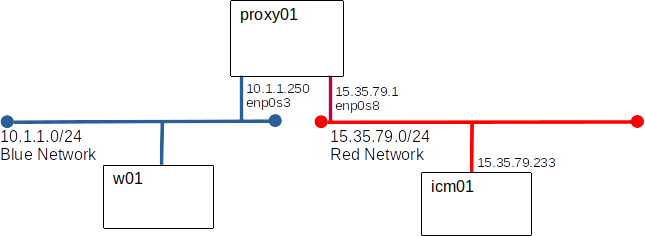

Network Isolation
It is common practice to segregate network traffic for performance and security.
Overview:
Your manager, Bullwinkle, hired renowned security experts Boris and Natasha to review Acme's network architecture.
Boris and Natasha's Recommendations:
- Isolate system builds on a build network used for nothing else. Immediately after install, the system has no patches and can be very vulnerable.
- Isolate systems management traffic on a management network separate from the production network.
- Allow no end-user workstation direct access to the management network.
- Allow no traffic to be routed between the management and production networks.
Acme's Network and Senior UNIX Teams came up with this design.

Your Job:
Your task is to configure r01 and build g01. The network team would normally provision a Cisco Firewall for use as r01 but it seems that all the technicians in the network group ate bad sushi with Boris and Natasha, leaving no one to configure the firewall - Bullwinkle volunteerd you saying, "back when I was an administrator we built or own firewalls from UNIX boxes, my UNIX Admin team will handle it!"
Requirements:
- Configuration: yoda
- Update the hosts file
- Add a route blue via 10.1.1.1
connection modify enp0s3 ipv4.routes '10.1.1.0/24 10.2.1.1'
- Configuration: r01
- Configure our static IP addresses
- Enable packet forwarding
- Create /etc/sysctl.d/90-override.conf containing
net.ipv4.ip_forward=1
- reboot r01
- Disable the firewalld based firewall. (We will replace this with a netfilter/nft firewall later.)
systemctl disable firewalld.service
systemctl stop firewalld.service
systemctl mask firewalld.service
- Update the hosts file
- Configure the nftables fire wall Detailed nftables steps
- Allow ssh from blue to red
- Allow http from blue to red (required for patching)
- Allow pings both ways
- Allow nothing else
- Configuration: g01 (no firewall config)
- Add a route to red through 10.2.1.1
connection modify enp0s3 ipv4.routes '10.1.1.0/24 10.2.1.1'
- Do not allow packet forwarding in the kernel (this is the default)
- Create accounts for: alice, bob, and boris
- Create a group named acmeadm with alice and bob as members
- Configure ssshd (/etc/ssh/sshd_config)
- Listen on 10.3.0.10
- Do not allow root to log-on via ssh
- Only alice and bob are allowed to log on via ssh - accomplish this by limiting ssh access to the group acmeadm
- General Requirements
- All servers must be built on the red network
- All servers must be configured to use the yum repositories from yoda exclusively. We don't want anyone installing untested patches
- All servers must be patched before they leave the red network.
- Before modifying any file, create a backup copy with the extension .prev (Grades will be awarded for the existence of .prev files.)
# Example:
# Before we edit /etc/ssh/sshd_config, we will create a backup copy
cp /etc/ssh/ssd_config /etc/sshd_config.prev
Recommended Hosts File:
10.1.1.1 r01red
10.2.1.1 r01blue
10.3.1.10 g01 g01black
10.2.1.10 g01blue
10.1.1.100 yoda
Recommended Test Plan:
| Host | Test | Expected Result |
| yoda | ping r01red | success |
| yoda | ping r01blue | success |
| yoda | ping g01blue | success |
| yoda | ssh g01blue | fail |
| r01 | ssh g01blue | fail |
| g01 | ping yoda | success |
| g01 | ssh yoda | success |
| g01 | curl http://yoda/foo | Error 404 (this means we can talk to httpd, only a web server answers 404) |
| w01 | ssh root@g01 | fail |
| w01 | ssh boris@g01 | fail |
| w01 | ssh alice@g01 | success (g01) |
Save Your Work:
From now on all the work we do must comply with Boris and Natasha's recommendations. Save the VM's you created for r01 and g01, you will need them for the labs that follow. Save an updated yoda too.
Grading:
Run the grading script COMING_SOON on r01 and g01.